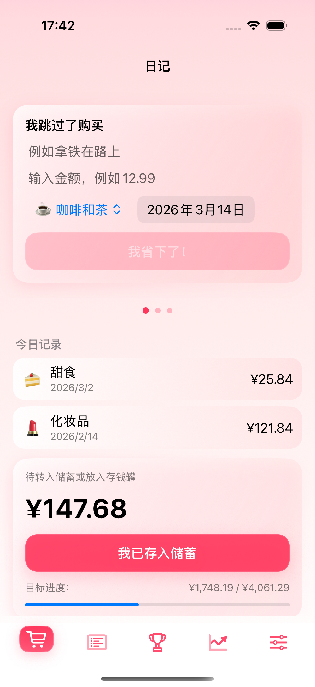
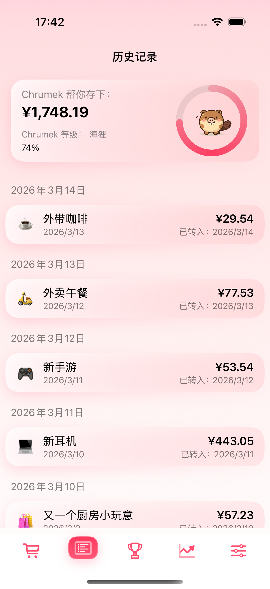
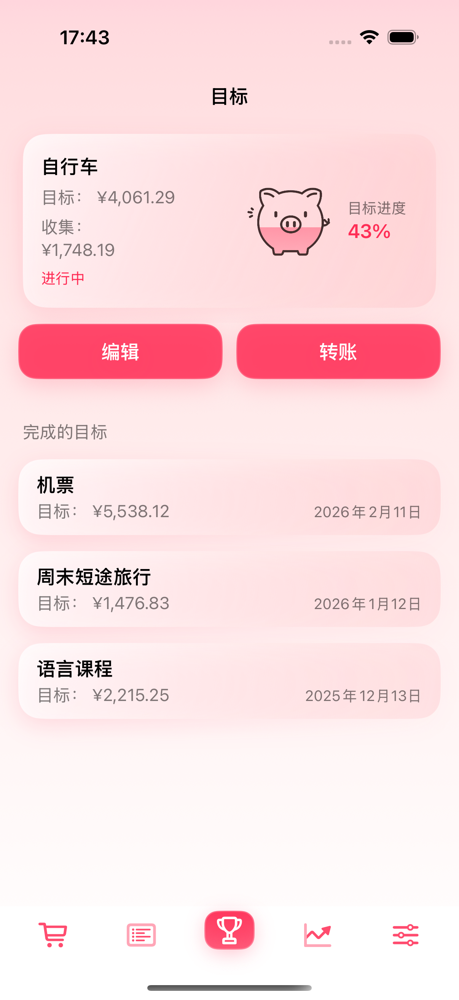
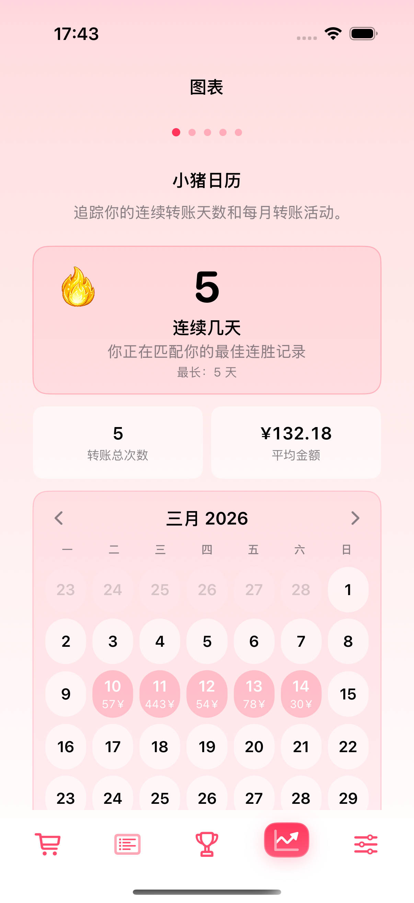

简单习惯
关键时刻，是钱离开主账户的那一刻。
记录金额，把它转到你真正存钱的地方，然后一键确认。 Chrumek 只计算你真正存下来的钱。

问题
没有买某样东西，并不代表钱真的被存下来了。承诺
只有确认转账后，进度和历史才会增长。不只是又一个记账工具
没有花掉？马上把它存起来。
你不需要记录每一张小票，只要抓住那些没有花钱或少花钱的瞬间。 只有当你真的把钱转入储蓄后，目标、历史和图表才会增长。
适合那些试过“少花一点”，并且知道如果没有真实转账， 钱仍会留在主账户里，之后悄悄消失的人。
不需要账号。不连接银行。不跟踪。只有你真正存下来的钱才会被计算。
简单习惯
记录金额，把它转到你真正存钱的地方，然后一键确认。 Chrumek 只计算你真正存下来的钱。
问题
没有买某样东西，并不代表钱真的被存下来了。承诺
只有确认转账后，进度和历史才会增长。真正的问题
01
你跳过一次购买，选择更便宜的选项，或取消不需要的订阅。 但没有什么会迫使这笔钱真正进入储蓄。
02
到月底，你知道钱花到哪里去了，却仍然看不清 自己到底真正存下了多少。
03
分类、表格和手动输入越多， 应用就越可能在几天后被放弃。
Chrumek 如何运作
Chrumek 只专注一件事：确保你没有花掉的钱不会之后从主账户里悄悄消失。
你放弃某个购买，选择更便宜的版本，或取消不必要的订阅。 Chrumek 记录的就是这个瞬间。
它把“我应该省钱”的想法变成一笔具体要存下来的金额。
这笔钱进入单独账户、信封、存钱罐，或任何你真正存钱的地方。
这样，储蓄就不只是停留在脑海里。
只有这时，记录才会进入历史、推动目标，并成为图表的一部分。
你看到的是可以信任的进度，因为背后有真实的钱在移动。
执行到底是什么样
你记录金额，把它从主账户转走，并且只在钱真正存下后确认。 日志、历史、目标和图表只显示真正进入储蓄的钱。




使用一周后
历史只计算已确认金额。没有虚假进度，也没有膨胀的总数。
三种快速记录方式：我没有买、我买得更便宜、我取消了订阅。
目标只在转账后增长，所以每一步都改变了真实的东西。
不需要账号，没有跟踪器，也不要求连接银行。
日常场景
场景 01
你选择 4.50 欧元的商品，而不是 6.50 欧元的商品。Chrumek 会记录差额， 避免这 2.00 欧元又花到别处。

场景 02
你没有在柜台支付 4.50 欧元，而是在 Chrumek 里记录跳过的拿铁。 这个小决定不再隐形。

场景 03
你取消一项每月 12.99 欧元的服务，并在 Chrumek 中记录这笔金额。 固定支出也可以每月让你更接近目标。

场景 04
自行车不再只是一个模糊想法。你能看到金额、进度， 以及真正让购买更近一步的已确认转账。

场景 05
你看到自己的决定，以及真正进入储蓄的金额。 这是系统有效的简单证明。

场景 06
每一次转入目标的钱都会留下痕迹。Chrumek 显示你的连续记录和真正存钱的日子， 让明天回来继续更容易。

场景 07
你可以给晚上设置一个平静提醒。 当还有钱需要转入储蓄时，应用会帮你回到这个简单习惯，而不用把一切都记在脑中。

场景 08
咖啡、外卖、游戏、电子产品。Chrumek 显示你的储蓄真正来自哪里， 让你更容易重复最有帮助的选择。

场景 09
你可以把转账和已完成目标导出为 CSV。 不需要账号，数据不会被锁在应用里，也不需要向任何人申请访问自己的历史。

“这是第一次，我能清楚看到自己实际存下了多少，而不只是打算存多少。”
“Chrumek 不奖励好意图。它只计算你真正存下来的钱。”
一个瞬间接一个瞬间
Chrumek 帮你抓住那些通常会无声消失的小决定。
01
你选择更便宜的商品，并在把差额花到别处前记录下来。
02
你跳过路上的咖啡，并立刻记录应该进入储蓄的金额。
03
你取消不用的订阅，把每月费用变成固定储蓄。
04
每一次已确认转账都会让你更接近真正想存钱购买的东西。
05
你看到的是已经真正进入储蓄的金额，而不只是计划中的金额。
06
你可以在没有账号、没有连接银行的情况下使用 Chrumek。钱去哪儿由你决定。
适合谁
不适合如果
FAQ
你会清楚知道自己安装的是什么：Chrumek 帮你把真实储蓄执行到底， 但它不会连接银行、不会替你转账，也不需要账号。
不需要。Chrumek 不连接你的银行。你可以把钱转到任何地方：独立账户、信封或存钱罐。
不会。应用帮你完成这个习惯：记录金额，在现实中把它存起来，然后在应用里确认钱已经站到你这边。
那你就不确认转账。这正是重点：图表、历史和目标只有在钱真的存下后才应该增长。
你在应用中输入的数据会留在本机设备上。你不需要创建账号，也不会把自己的决策历史交给外部仪表盘。
你可以先试用再付费。付费功能的后续访问通过 App Store 处理，是否有试用取决于当前对该用户可用的优惠。
可以。Chrumek 支持 CSV 导出，因此你可以把已确认储蓄和目标带到应用之外。
最后一步
Chrumek 不衡量意图。它帮你完成钱真正站到你这边的那个瞬间。
不需要账号。不连接银行。从今天第一笔没有花掉的钱开始。